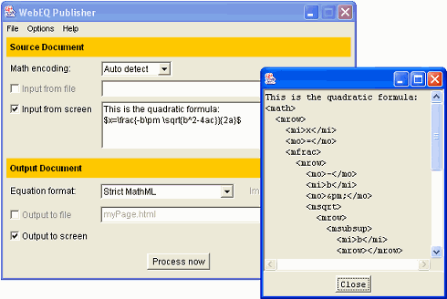

WebEQ Publisher is a document processing program. It reads in a source file containing math markup and produces a new output file where the math has been processed into a format ready for publication.
The source file

To use the Publisher, you will generally need to go through the following steps:
A common way to use the Publisher is to process a source HTML file with embedded WebTeX code to produce an output HTML file with a Viewer Control applet tag for each equation. For example, in an HTML source file, an author might write:
The area of a circle is given by $A = \pi r^2$, where <em>r</em> is the radius.
In the HTML output file, the Publisher would write out something like:
The area of a circle is given by <b><applet codebase="classes" code="webeq3.ViewerControl" height="28" width="87"> <param name="eq" value="A= \pi r^2"> </applet></b>, where <em>r</em> is the radius.
Note that the Publisher writes out the height and width of the applet, since Java applets must specify in advance how large they should be, and fills in the codebase attribute in the applet tag.
As an example of the fine tuning processing options, you might want to change the codebase to a different location by using the Viewer Control Options.